School Projects
Here are some of the projects from my studies at Ecole 42.
Click on the project's name to get more details.
→ libft
A library of useful functions, used in all the following projects.
project page→ push_swap
A sorting algorithm project, using two stacks and a set of instructions. The program is executed and outputs in the terminal.
project page→ FdF
A 3D wireframe viewer that takes an object text file as input and outputs an 3D wireframe of it. The library allows to open a window, draw one pixel and manage events.
project page 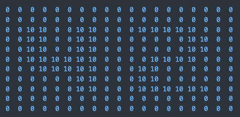input file
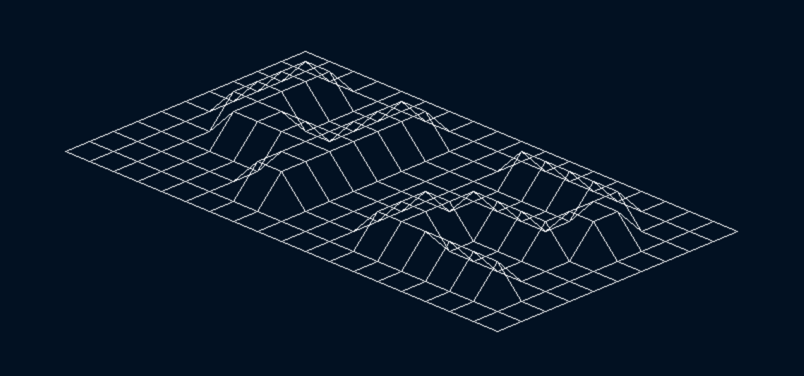output
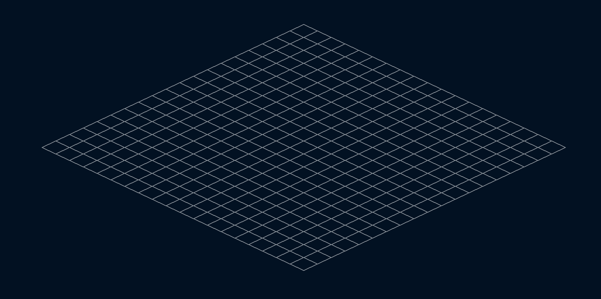 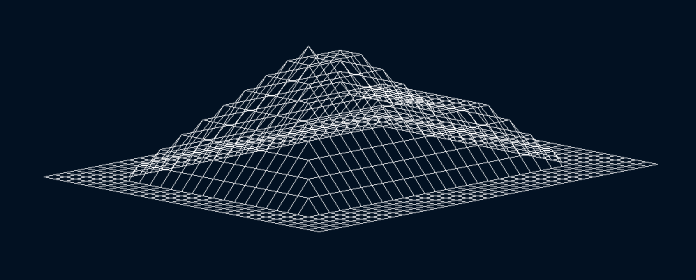 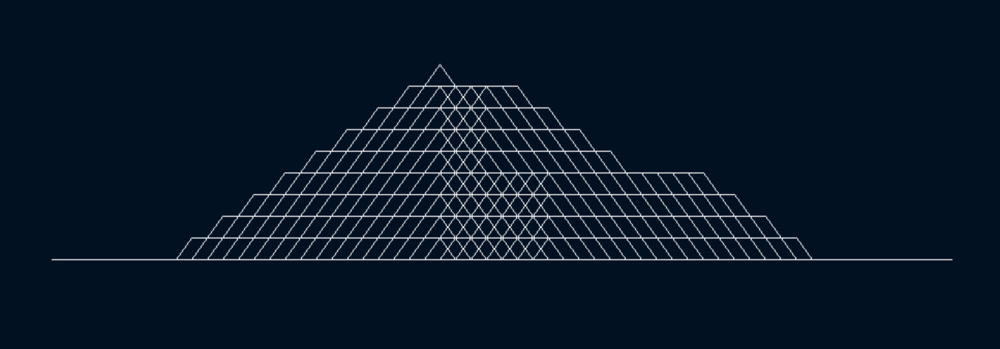 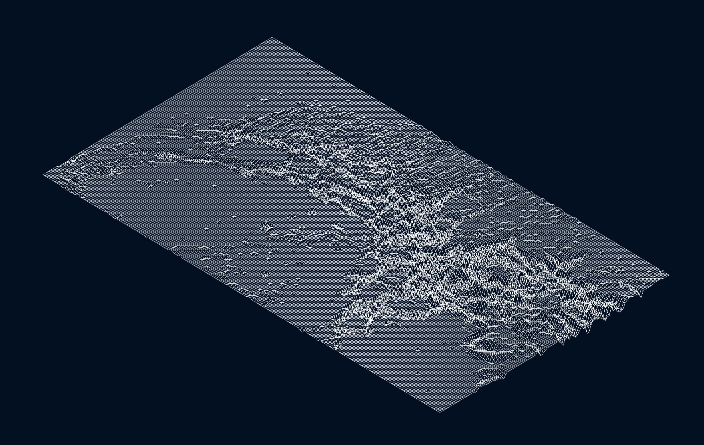→ minishell
A shell implementation that provides a basic command-line interface for executing commands on a Unix-like system.
project page 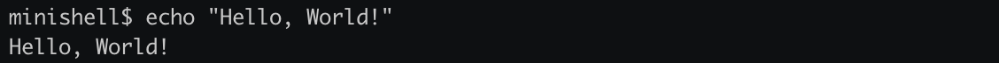 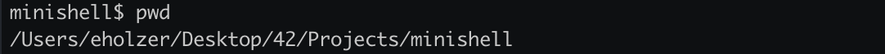 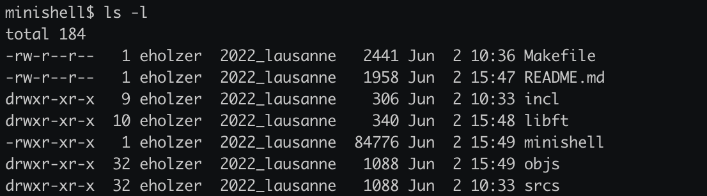→ miniRT
A 3D image rendering program that uses the raytracing technique
This raytracer is capable of rendering scenes with spheres, planes, and cylinders. Users have the freedom to position the camera, specify ambient lighting, and add a spotlight. The project calculates diffuse lighting on objects based on the provided scene description in a .rt file.
project page 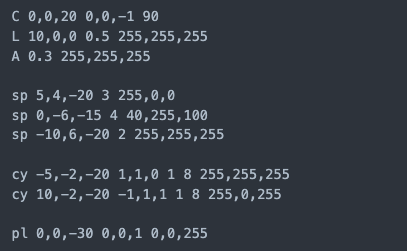input file
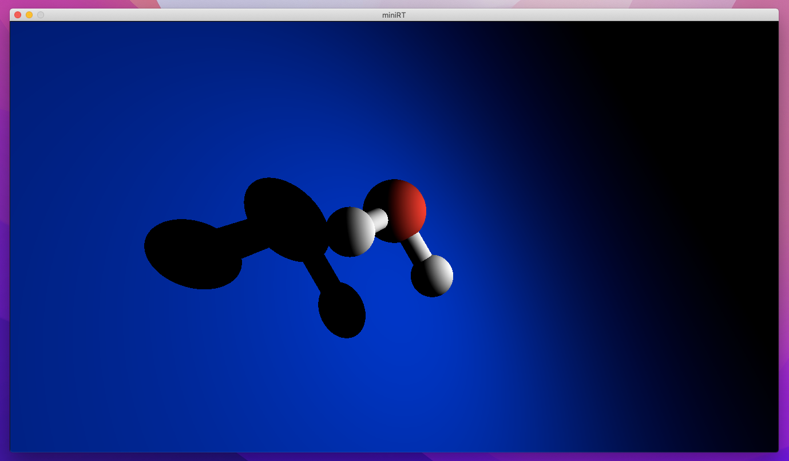output image
Personal Projects
Here are some of my personal projects.
→ Wireframe Viewer


A 3D wireframe viewer, taking text as input and displaying it as a 3D object. The object can be rotated and scalled interactively with the mouse.

→ .météo
A simple weather app, using the OpenWeatherMap API.
Below is the project's embedded webpage:
→ Kizuna
A 2D level-based game made in solo during the GMTK 21 Game Jam in 48h with GameMaker Studio 2.
project pageBelow is the game's trailer:
→ 2D Vector Space Visu
A 2D vector space visualization, to apply and see linear transformations
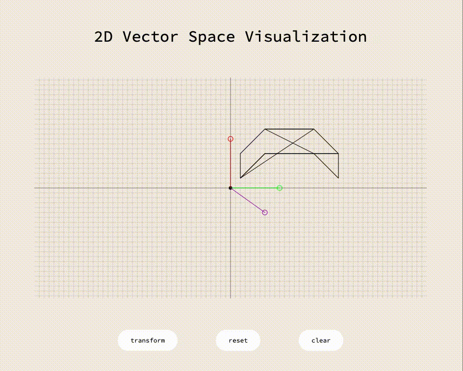→ Portfolio Website
This website, made with only pure HTML, CSS and JavaScript. (And lots of love!)
project page